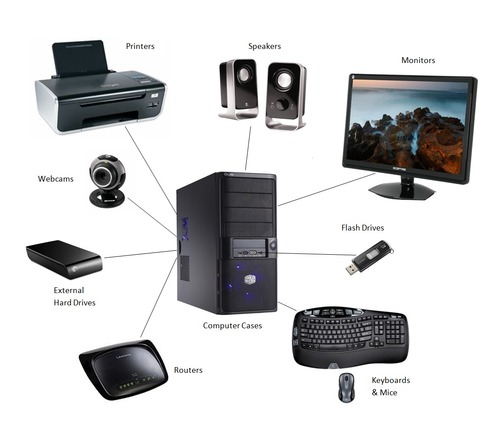

Fysieke laag
Wat is de fysieke laag?
De fysieke laag is één van de drie lagen uit dit model. Het bestaat uit alle—geloof het of niet—fysieke delen van een apparaat. Dus alles wat je letterlijk aan kan raken en fysiek gebruiken hoort hierbij. Denk aan het toetsenbord, de muis, het beeldscherm, de speakers, etc. Hierbij hoort natuurlijk ook de computer zelf—die kast waar alles eigenlijk gebeurt.
Waar is het voor?
Bij deze dingen horen vaak de invoerapparaten. Je hebt immers de muis, het toetsenbord, het beeldscherm en alle knopjes die op of om je apparaat heen zitten nodig om ook maar iets te doen in het systeem. Zonder muis, toetsenbord of home-button kom je niet ver.
